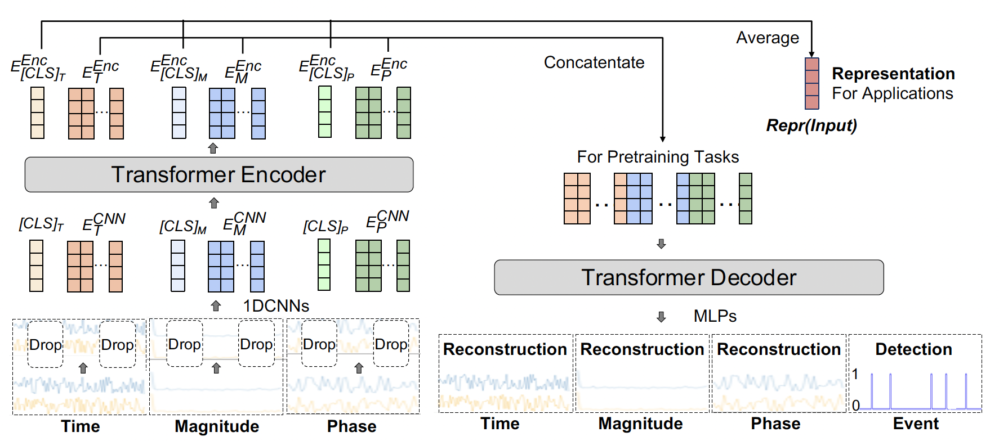

Mouse2Vec: Learning Reusable Semantic Representations of Mouse Behaviour
Guanhua Zhang, Zhiming Hu, Mihai Bâce, Andreas Bulling
Proceedings of the ACM CHI Conference on Human Factors in Computing Systems (CHI), 2024: 1-17.

Abstract
The mouse is a pervasive input device used for a wide range of interactive applications. However, computational modelling of mouse behaviour typically requires time-consuming design and extraction of handcrafted features, or approaches that are application-specific. We instead propose Mouse2Vec – a novel self-supervised method designed to learn semantic representations of mouse behaviour that are reusable across users and applications. Mouse2Vec uses a Transformer-based encoder-decoder architecture, which is specifically geared for mouse data: During pretraining, the encoder learns an embedding of input mouse trajectories while the decoder reconstructs the input and simultaneously detects mouse click events. We show that the representations learned by our method can identify interpretable mouse behaviour clusters and retrieve similar mouse trajectories. We also demonstrate on three sample downstream tasks that the representations can be practically used to augment mouse data for training supervised methods and serve as an effective feature extractor.Links
BibTeX
@inproceedings{zhang24mouse2vec,
title = {Mouse2Vec: Learning Reusable Semantic Representations of Mouse Behaviour},
author = {Zhang, Guanhua and Hu, Zhiming and B{\^a}ce, Mihai and Bulling, Andreas},
year = {2024},
pages = {1--17},
booktitle = {Proceedings of the ACM CHI Conference on Human Factors in Computing Systems},
doi = {10.1145/3613904.3642141}}